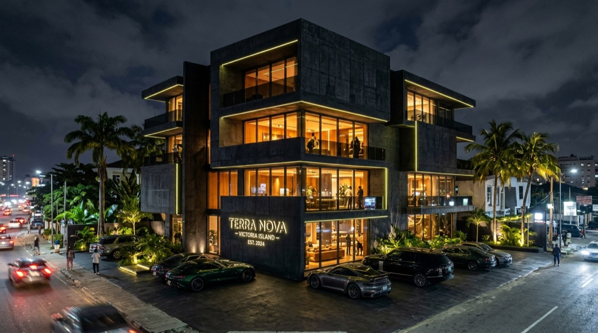
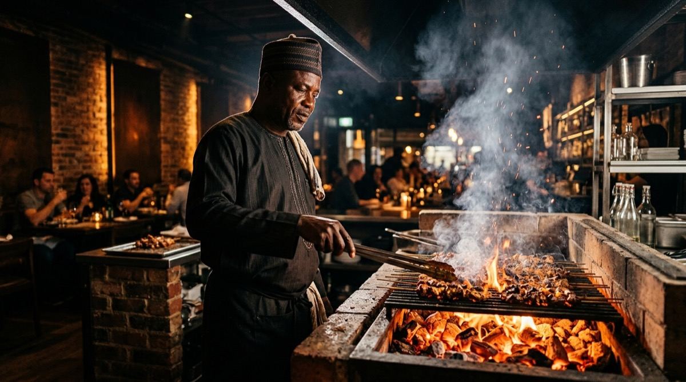

See How We Turn Skewers into RIOTS—
We don’t believe in roadside compromises, gristly cuts, or lukewarm skewers drowned in MSG. We believe in spitting mangrove embers, the intoxicating fragrance of stoneground Northern yaji, sizzling ram tozo fat caramelizing over iron grates, and knives slicing through flame-blistered beef that melts on contact.



